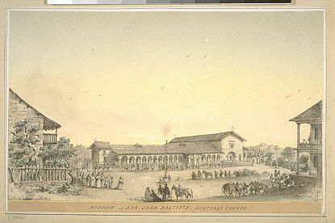

Main plaza and Mission of San Juan
Bautista, California, circa 1862.
Library of Congress photograph
from http://memory.loc.gov/pp/pphome.html.
[] Internet Course Materials
[] Library Research [] Archival
Resources [] Professional Associations
[] Online Publications
[]
Electronic
Journals [] Archaeology &
Anthropology [] Digital Resources
Development [] Virtual Archaeology
[] Lithics/Flintknapping [] Geographic
Information Systems [] General Links []
Social
& Cultural Anthro [] Forensic
Anthropology [] Biological Diversity
[] Physical Anthro [] Human
Demography [] Primatology Studies [] Anthropological
Linguistics [] Tele-Embodiment [] Online
Discussions [] Listservs [] Spanish
Missions []
Social Science Resources
The following web links are provided as an
introduction to the world of on-line Internet anthropology and archaeology
resources currently available on the World Wide Web. Because of the
ever changing nature of the WWW and the location and hosting of Web Site
servers, some of the following links may not be active at any given moment.
If you have Internet links that you would like to contribute to the buildout
of the ArchLynX resources page, please e-mail your favorite web links (URL's)
to: ruben_mendoza@monterey.edu
or send via regular mail to: Ruben G. Mendoza, Ph.D., Director, Institute
of Archaeology, California State University Monterey Bay, 100 Campus Center,
Seaside, CA 93955-8001. Photo: The music room of Old Mission
San Juan Bautista by Ruben G. Mendoza, 1998.
Internet
Course Materials
World
Lecture Hall
Online
Library Research
Anthropological Index
Online
Anthropology:
Some Potentially Useful Reference Sources
Anthropology-Style
Citations of Electronic Resources
Handbook of Latin American Studies
Resources
in Anthropology
Archival
Resources
American Memory
- Library of Congress: Historic American Buildings Survey, 1933-Present
Professional
Associations
Association
of Latina and Latino Anthropologists
American Anthropological Association
Archaeological
Institute of America
Discovering
Archaeology: Associations
Federation of Small Anthropology Programs
National
Association of State Archaeologists
Royal Anthropological Institute
Society for American Archaeology
Society for Applied Anthropology
Society for Archaeological
Sciences
Society
for Economic Anthropology
Society for Historical Archaeology
Society for Industrial Archaeology
Society for Medical Anthropology
Society for Professional
Archaeologists
Online
Publications
American
Antiquity
Anthropoetics
Anthropological Linguistics
Anthropology
Today
Antiquity
Archaeology Magazine
Current
Anthropology
Current Archaeology
Journal
of Anthropological Archaeology
Journal of
Archaeological Science
Journal of Field Archaeology
Journal
of Human Evolution
Journal
of Political Ecology
Journal
of World Anthropology
Latin
American Antiquity
Population Index
Electronic
Journals
Archaeological
Computing Newsletter
AZTLAN E-Journal
Internet Archaeology
Online
Archaeology
Human
Antiquity Update
Archaeology
and Anthropology
Archaeology
and Anthropology
A History of Anthropology
American Museum of Natural History
ArchNet
Florida Museum of Natural History
Peabody Museum of Archaeology
and Ethnology
Phoebe Hearst Museum
(UC-Berkeley)
Royal Ontario Museum
Smithsonian Institution
Southwest Archaeology: An Ethnographic
Look at Applied Scientific Practices in the American Southwest
University of Michigan Museum
of Anthropology
University Museum, University
of Pennsylvania
Digital
Resources Development
Digitising
History: A Guide to Creating Digital Resources from Historical Documents
Virtual
Archaeology
Archaeological
Prospection Resources
Archaeological
Remote Sensing Library of Geophysical Imagery
Archaeological Research Institute
Ceren
Chetro Ketl Great Kiva
Ciudad Arqueologica
(Virtual Archaeology Postcards)
Copan Museum,
Honduras (Virtual Museum)
Digital
Darwins
Exploring
Chavin de Huantar
Intelligent Agent:
Interactive Media in Arts and Education
Mercury Project: Tele-Excavation
Modelling
Archaeological Distributions
S.P.Q.R. Blues
Virtual Archaeology
(Links)
Virtual Engineering: JTA
Studio (Virtual Archaeology)
Virtual Palenque
Virtual
Communities, Virtual Settlements, and Cyber-Archaeology
Virtual
Reality Archaeology
Lithics/Flintknapping
Flintsource.net
Geographic
Information Systems
Microsoft Terraserver:
World's Largest Online Database
Archaeological
GIS Projects in New Zealand and Australia
General
Links
AnthroLink
Anthropological
Multimedia
Anthropology in
the News
Anthropology
Resources on the Internet
Matt’s Paleo Pages
Nicole’s AnthroPage
University
of Buffalo Anthropology: Direct Access to Web Anthropology
Social
and Cultural Anthropology
ANTHAP:
The Applied Anthropology Computer Network
Fieldwork:
The Anthropologist in the Field
Ethnic World Survey
Ethnomedicine
Online Media Archive
History of Biomedicine
Kinship
and Social Organization: Interactive On-line tutorial
Race and Ethnicity
Ancient
World Web
Archaeological
Fieldwork Opportunities
Archaeology
Archaeology on
Film
ArchaeologyEd Web
Site
Careers, Opportunities, and Jobs
in Archaeology
Links to the Past
Anth 1602
Prehistoric Cultures
Archaeology: An Introduction
Introduction to
Archaeology
Forensic
Anthropology
American Board
of Forensic Anthropology
Forensic Science
Resources
CancerWeb: The Online Medical
Dictionary
CU Center for Human Simulation
National
Library of Medicine: Visible Human Project
The Digital Anatomy
Lab
Carpenter's Forensic Science
Resources
Carpenter's
Forensic Entymology
South
Bank University: Pathology of Skeleton
Zeno's Forensics
Page
Dental Anthropology
Association
Biological
Diversity
Anthropometry Resource
Center
Danish Centre for Human Genome
Research
Human Genome
Databases Menu
The Human
Genome Diversity Project
The
Human Genome Project
Human
Genome Project Information
National
Human Genome Research Project
Human Population Genetics Laboratory
Stanford Human Genome Center
Physical
Anthropology
Human Origins and
Evolution
McGraw-Hill
Anthropology Newsletters
Fossil
Hominids
Hominid Paleoethology
Institute of Human Origins
MendelWeb
PaleoChat
Talk Origins
Human
Demography
Centers for Disease Control
and Prevention
U.S. Census Bureau
World Health Organization
The
World Wide Web Virtual Library: Demography and Population Studies
Primatology
Studies
Dental Microwear Web
Site
Primatology Links
More
Primatology Links
Anthropological
Linguistics
Language and
Linguistics Links
The LINGUIST List
The
Mapuche Language Page
Transcript of
Mambila
A Web of On-Line
Dictionaries
African Music Archive
Ceolas
The Jewish Music Network
Music from Africa
and the African Diaspora
Seven Colors of the Balkans
Tele-Embodiment
The Mercury Project
Tele-Embodiment Blimps
Online
Discussions
alt.archaeology
alt.culture.*
alt.history.ancient-worlds
sci.anthropology
sci.anthropology.paleo
sci-archaeology
sci-archaeology.mesoamerican
sci.archeology.moderated
sci.lang
soc.culture.*
soc.culture.native
soc.history.ancient
soc.mis
soc.religion.*
talk.origins
Listservs
AIA-L
ANTHEORY-L
ANTHRO-L
ANTHRO-L ARCHIVES
ARCHAEO-L
ARCHCOMP-L
ARCH-L
ARCH-STUDENT
AZTLAN
DEVEL-L
ETHMUS-L
ETHNOHIS
HISTARCH
INTERCUL
LANGUAGE-CULTURE
LINGANTH
LINGUIST
LITHICS-L
MUSEUM_l
PALEOANTHRO
PAN-L
PRIMATOLOGY
SBANTH-L
SPANBORD
WOMANTH-L
XCULT-X
archaeology_institute@csumb.edu
All Text and Photographs on this Web Site are Copyrighted
by Ruben G. Mendoza, 1998